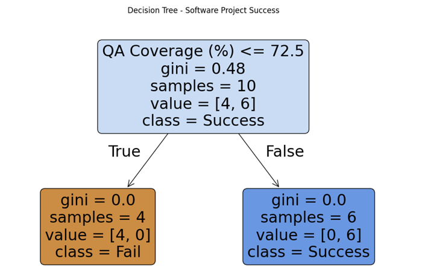
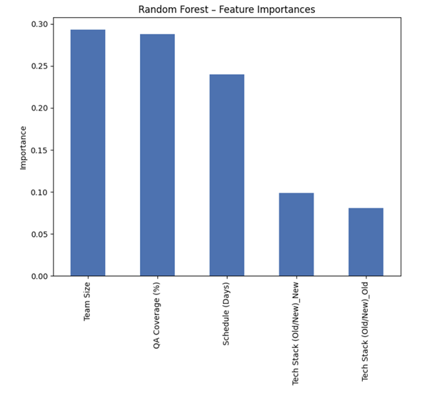
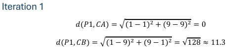
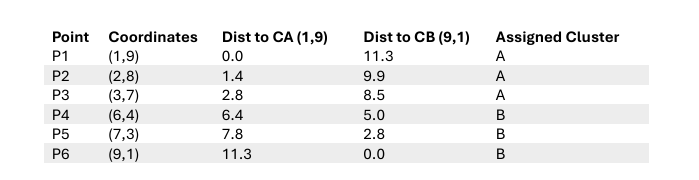
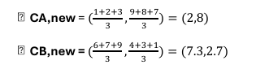
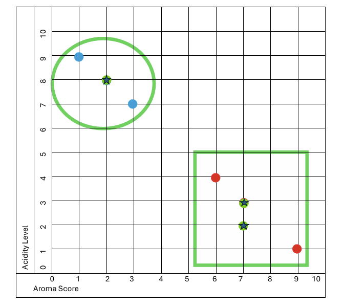

Q1 — Used car pricing
Linear regression on engine size + mileage → price. Grab and rotate the fitted plane.
Logistic regression — does a car sell within 7 days? The black line is the learned decision boundary.
Q2 — Why software projects fail
The decision tree found one clean split: all 4 projects with QA coverage ≤ 72.5% failed; all 6 above it succeeded. The random forest's feature importances agree.

The failure pathway — a single QA-coverage split.

Team size, QA coverage and schedule dominate.
Q3 — K-means worked by hand
Manual iteration on coffee bean quality: euclidean distances → cluster assignment → new centroids.

Iteration 1 distances.

Assignment table.

New centroids: (2,8) and (7.3,2.7).

Final clusters with centroids marked.
Q4 — Wine dataset: unsupervised vs supervised
Elbow and silhouette agree on K=3. Then a random forest beats the SVM wildcard — and the tri-view shows how close unsupervised clusters come to truth.
Honest limitations
The car dataset has 10 rows — an 80/20 split leaves 2 test points, which is why test R² is −25 despite train R² = 0.94. The model memorizes rather than generalizes: dataset size constrains what a model can prove more than algorithm choice does.
Files: notebook · report (PDF) · data